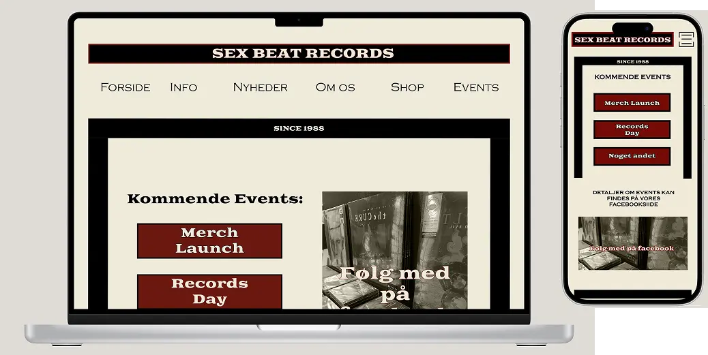

PROJEKT 4
GRUNDLÆGGENDE INDHOLD
I dette tema blev vi introduceret til Photoshop, After effects og lottiefiles. Vi lærte bl.a. hvordan man kunne udarbejde en 404 side ved brug af lottiefiles. I projektet skulle udarbejde i grupper et redesign af et website for en virksomhed, som vi selv skulle kontakte.
PROCESSEN
I min gruppe kontaktede vi virksomheden Sex Beat Records, som er en lille pladebutik i det indre København. Vi interviewede ejeren, hvor vi lærte mere om ham, selve butikken samt hans tanker og krav til et redesign af hans nuværende hjemmeside. Selve planlægning og fordeling af arbejdsopgaver i gruppen foregik via Trello, hvor vi dagligt afholdte SCRUM-møder for løbende at opdatere hinanden gennem hele processen. Selve processen bestod, som i tidligere projekter, af research, design, kodning, test og afslutningsvis en præsentation.
LÆRING
Det har været lærerigt, at arbejde som et team. Lærer min egne styrker og svagheder i gruppearbejde af kende, men også andres. Derudover har det været spændende, at arbejde sammen med en virksomhed, og opfylde kundens tanker og krav, og ikke lave et design ud fra, hvad man selv synes.
LØSNING
Her kan du finde den endelige løsning, hvor alle elementer er samlet og implementeret. Klik på linket nedenfor for at se den endelige site.
emilieerikson.dk